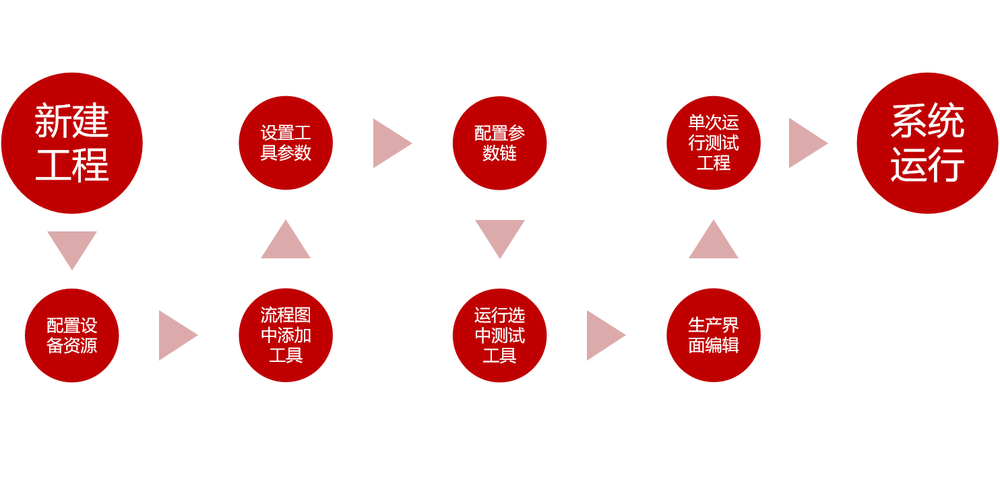

新建空解决方案
打开现有解决方案

使用VISIONAssembly搭建解决方案和工程，主要流程如下

VISIONAssembly支持新建和打开已有的解决方案，并且提供了工具级和应用级的示例工程，位于VISIONAssembly_x64\Samples文件夹下，推荐大家使用标准化的解决方案进行搭建修改。
新建空解决方案
打开现有解决方案
配置工程实际运行时必要的设备资源，如相机、通信端口、光源等。
详细信息可参考：产品功能/相机管理、产品功能/通信管理、产品功能/光源管理
流程图搭建是整个工程搭建中的主体部分，包含了整个工程的运行逻辑、运行数据。整个流程的搭建大致由三部分组成，如下：
添加检测工具
添加逻辑控制结构
逻辑控制的详细信息可参考：产品功能/流程图/控制流
添加表达式
表达式的详细信息可参考：产品功能/流程图/表达式

工具使用的详细信息可参考：产品功能/流程图/工具使用
参数链的详细信息可参考：产品功能/流程图/数据链
运行单个工具，或某一段流程，查看其执行结果，根据执行结果进行适当的参数修改

运行单个工程，查看某个工程的执行情况，根据执行结果进行适当的流程逻辑修改或工具参数修改
运行测试的详细信息可参考：产品功能/流程图/调试与运行
进入生产界面编辑，进行生产时的界面布局设置。可以自由地添加各种控件，布置出各种想要的布局。


生产界面编辑的详细信息可参考：产品功能/生产界面编辑
最后一步即整体的运行。工程调试完成转交生产时，在生产界面运行整个工程，观察整个流程的执行状态和生产情况。